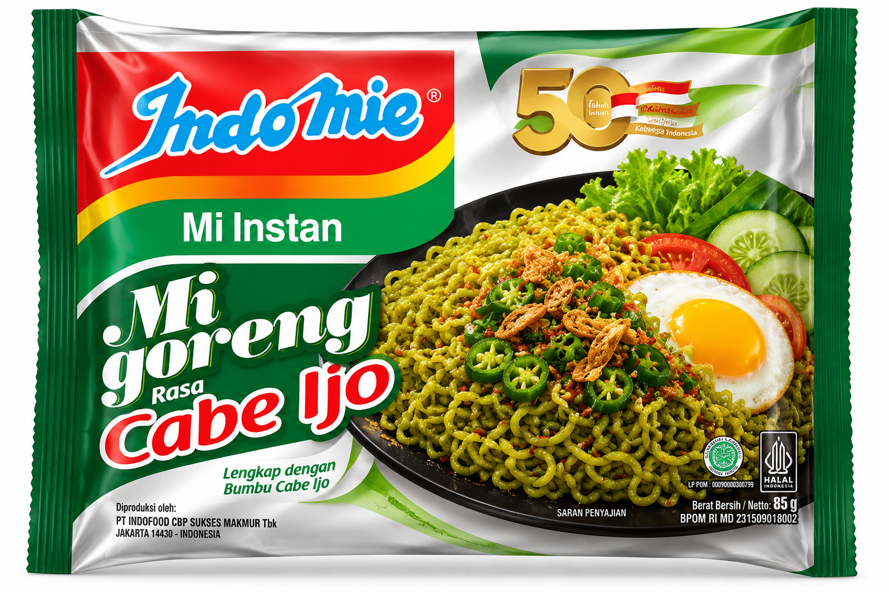

Karakter Cabai
Sensasi pedas gurih dengan karakter rasa cabai hijau.
↗Kenikmatan mi goreng bertemu karakter cabai hijau. Gurih yang familiar, sensasi rasa yang punya cerita. Saatnya kasih panggung untuk sisi berani dari setiap suapan.



Ada sensasi pedas gurih yang bikin pengalaman makan terasa berbeda. Perpaduan mi goreng dan karakter cabai hijau hadir buat kamu yang suka rasa dengan kepribadian.
Nikmati sesuai petunjuk penyajian pada kemasan. Tambahkan topping favoritmu untuk kreasi yang lebih personal.
TEMUKAN KEUNGGULANNYA ↗Kenali pengalaman rasa dalam setiap sajian. Simpel dibuat, seru dinikmati.
Sensasi pedas gurih dengan karakter rasa cabai hijau.
↗Kenikmatan mi goreng yang cocok untuk waktu makanmu.
↗Ikuti petunjuk kemasan untuk menyiapkan sajianmu.
↗Padukan dengan topping pilihan untuk sentuhan personal.
↗Siapkan mi favoritmu dan eksplorasi sensasi pedas gurih yang beda.
Setiap rasa punya karakternya sendiri. Temukan sisi yang paling menggambarkan pengalaman makan favoritmu.
Untuk kamu yang suka rasa dengan karakter kuat. Cabai hijau menjadi inspirasi untuk pengalaman mi goreng yang terasa berbeda.
Tambahkan sentuhan favoritmu untuk momen makan yang lebih menyenangkan.


Temukan produk dan informasi resmi Indomie.
Kunjungi Indomie ↗